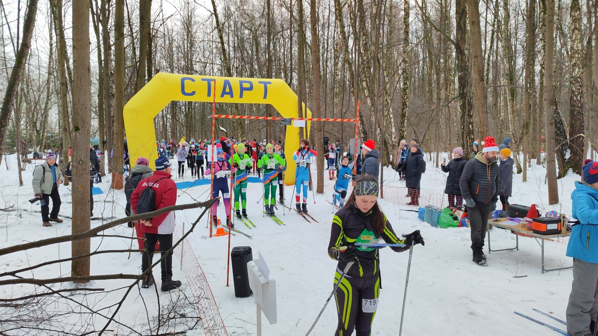
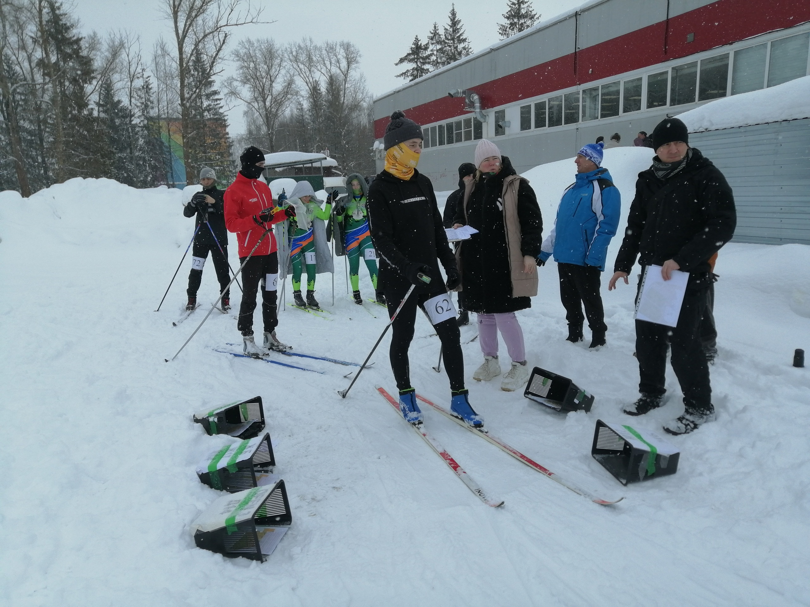
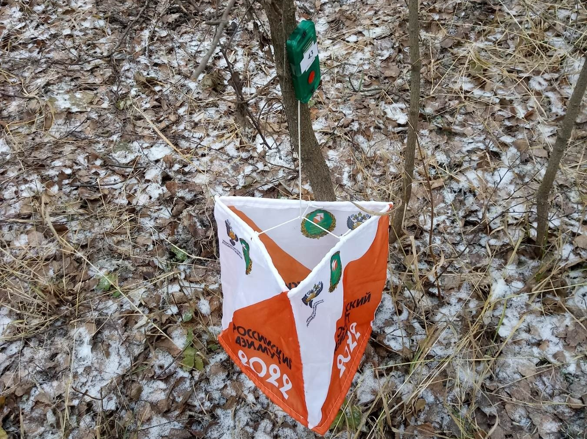
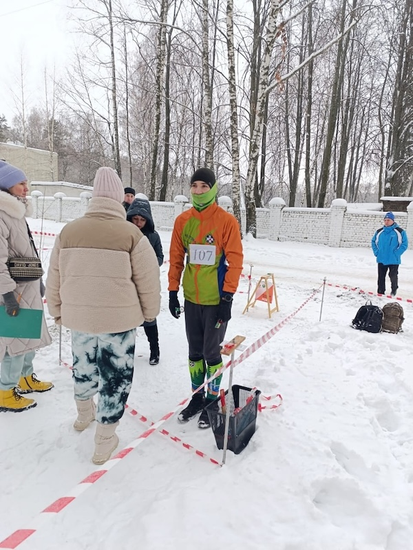
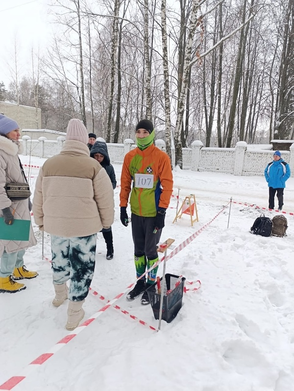

Соревнования в Костроме
Во все времена года!
20 января 2025
Внимание! Успей зарегистрироваться. 2 февраля Чемпионат и Первенство Костромской области на маркированной трассе.
Регистрация

15 декабря 2024
Сегодня в парке Берендеевка прошел Чемпионат Костромской области по спортивному ориентированию. Ребятам
пришлось преодолевать свои дистанции по заснеженным тропам, но это ни чуть их не испугало. Зимний лес и
интересные трассы подарили незабываемые впечатления от соревнований. ИТОГОВЫЙ протокол прикреплён ниже.
Результаты
13 октября 2024
В воскресенье 13 октября прошли соревнования по спортивному ориентированию. Спринт.
Погода в день соревнований нас побаловала солнышком. Настроение было просто отличным.
Овраг у Филармонии позволил спланировать довольно сложные дистанции, а для новичков это самое замечательное
место старта. Потеряться нельзя - всё как на ладони.
Результаты
28 апреля 2024
Сегодня в солнечный день, 28 апреля в парке "Победы" прошли соревнования по спортивному ориентированию,
посвящённые 79-ой годовщине Победы в Великой Отечественной войне 1941-1945гг.
Данные соревнования собрали более 130 участников разного возраста.
Для каждой возрастной группы была своя дистанция. Очень порадовали нас семейные команды.
Сегодня был поистине праздник спорта и здоровья.
3 марта 2024
Сегодня в солнечный весенний день 3 марта состоялся 3 этап Кубка Парков города Костромы. Было
зарегистрировано более 160 участников. Погода нас радовала. Трассы были скоростные. Большая часть
ориентировщиков имеют отметку ОК.
18 февраля 2024
18 февраля прошли соревнования по спортивному ориентированию в Караваево. Более 75 участников из разных школ
г. Костромы, Нерехты, ВА РХБЗ г. Костромы приняли в них участие. Несмотря на непрекращающийся снег, который
ухудшал дистанцию, участники справились с поставленной задачей. Нашли все КП и финишировали.

19 ноября 2023
19 ноября в микрорайоне Черноречье прошёл 2 этап Кубка Парков города Костромы по спортивному ориентированию.
Впереди ещё два этапа Кубка.

14 октября 2023
14 октября 2023 года в "Парке Победы" прошел 1 этап Кубка.
Более 110 участников из разных школ города и
детских объединений г. Костромы, г. Нерехты зарегистрировались на данные соревнования.
Погода преподнесла сюрприз. Утро было солнечным, но во время старта начался проливной дождь и не
заканчивался на протяжении всего времени соревнований. И это, конечно же сыграло не в лучшую сторону на
моральное состояние участников соревнований.
Но, настоящий ориентировщик не сдаётся!
Это только первый старт, впереди нас ждут ещё 3 этапа Кубка.
29 апреля 2023
29 апреля 2023 года в Парке Победы, проходили соревнования по спортивному ориентированию, посвященные 78-ой
годовщине Победы в Великой Отечественной войне 1941 - 1945 годов.
Более 180 участников из разных объединений "Твои ориентиры", "Шахматы на бегу", г. Нерехты, Иваново,
Кинешмы, Ярославля, курсанты РХБЗ были зарегистрированы на данном мероприятии, Но погода внесла свои
коррективы и стартовало лишь 120 участников.
Всем большое спасибо, вы настоящие ориентировщики для которых нет плохой погоды.
25 апреля 2023
25 апреля в ДДТ "Жемчужина" состоялось торжественное подведение итогов "КУБОК ПАРКОВ ГОРОДА КОСТРОМЫ
2022-2023гг." по спортивному ориентированию. Это был для ориентировщиков настоящий праздничный день. На этом
празднике присутствовали участники детских объединений "Шахматы на бегу", "Твои ориентиры", г. Нерехты -
гимназия и ДЮСШ, курсанты РХБЗ, родители. На пьедестал то и дело поднимались победители и призёры.
12 марта 2023
Сегодня 12 марта состоялся последний 4 этап Кубка Парков города Костромы по спортивному ориентированию.
Погода была ужасная: дождь, ветер, но ничто нас не расстроило. Ведь "Плохой погоды" для настоящих
ориентировщиков не бывает. Ждем результатов.
12 февраля 2023
12 февраля в Караваево прошёл 3 этап Кубка Парков города Костромы по спортивному ориентированию.
27 ноября 2022
27 ноября в парке "Берендеевка" прошли соревнования по спортивному ориентированию - 2 этап Кубка парков
города Костромы. Организаторы: Дом детского творчества "Жемчужина".
Данные соревнования собрали более 200 участников из разных детских организаций, клубов, школ г. Костромы,
Нерехты и Нерехтского района, Костромского района.
Участникам предстояло пройти дистанцию в заданном направлении по виду классика. Дистанция была
достаточно длинная, но интересная.
В этот раз много участников было в отрытых группах. Значит скоро мы научимся и появиться конкуренция в
основных группа.
А 27 ноября это не просто день, а еще и День матери.
Как было приятно видеть много мам на дистанции вместе с детьми. Некоторые отважные мамы попробовали свои
силы и самостоятельно.
Да! Спортивное ориентирование это Семейный вид спорта.
Хочется ещё раз выразить большую благодарность судьям-волонтерам. Вы помогли организовать замечательные
соревнования.
23 октября 2022
Сегодня, 23 октября 2022 года, прошел 1 этап Кубка по спортивному ориентированию.
В данных соревнованиях приняло участие 126 человек. На сравнительно небольшом участке, с интересным
рельефом, было расставлено более 30 КП. Для каждой возрастной группы свое количество КП и своя дистанция.
Сложность состояла в том, что много сбивающих "не своих" КП. Радость встречи с друзьями, ребятами, их
родителями и педагогами, отличная погода - всё способствовало позитивному настрою.
Хочется выразить большую благодарность судьям-волонтерам. Спасибо, что помогаете в развитии увлекательного
вида спорта - спортивное ориентирование.
Ждем в конце ноября на 2 этапе кубка.
16 октября 2022
16 Октября 2022 года в Караваевском лесу прошел "Семейный туристский слет". Более 29 семей вышли на старт.
Им пришлось в течении 2-х часов найти 17 КП и ответить на сложные вопросы. Отдохнув у костра пройти еще одно
испытание: "Полосу препятствий". Преодолеть условное болото по "гати", распилить с помощью двухручной пилы
бревно, преодолеть параллельные перилла, пройти паутину и переправиться на противоположный берег с помощью
горизонтального маятника, а в завершении разжечь костер. Все справились! Молодцы!


 
